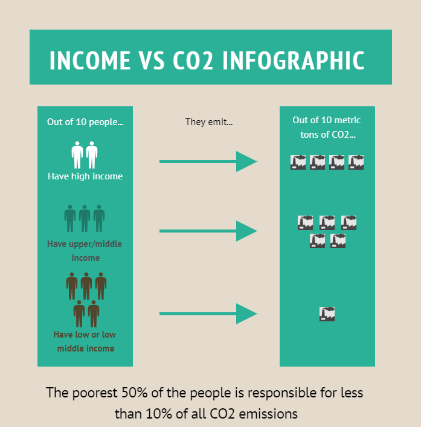

Per a la infografia, a més de preparar les dades, vam començar amb un proportion plot creat amb Tableau Public. Finalment em va semblar millor una representació més visual, que he creat amb infogram, resultant en la imatge que mostrem aquí:

Fonts i referències: